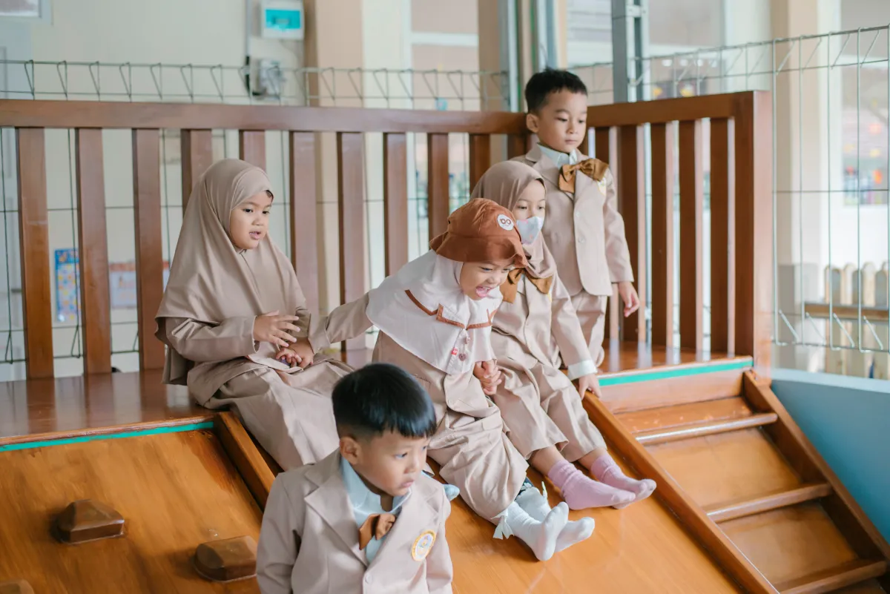
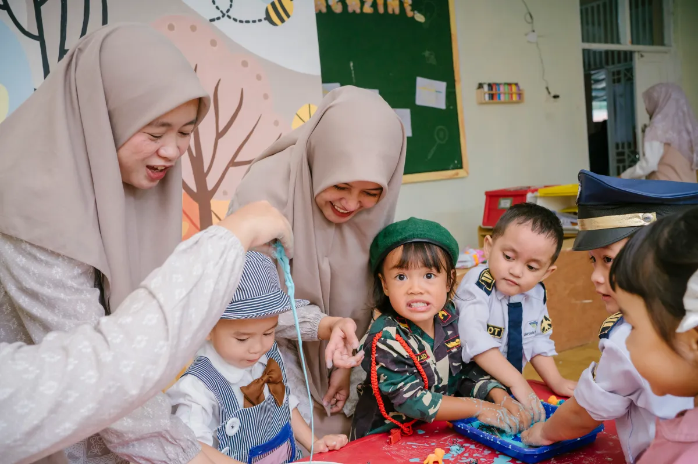
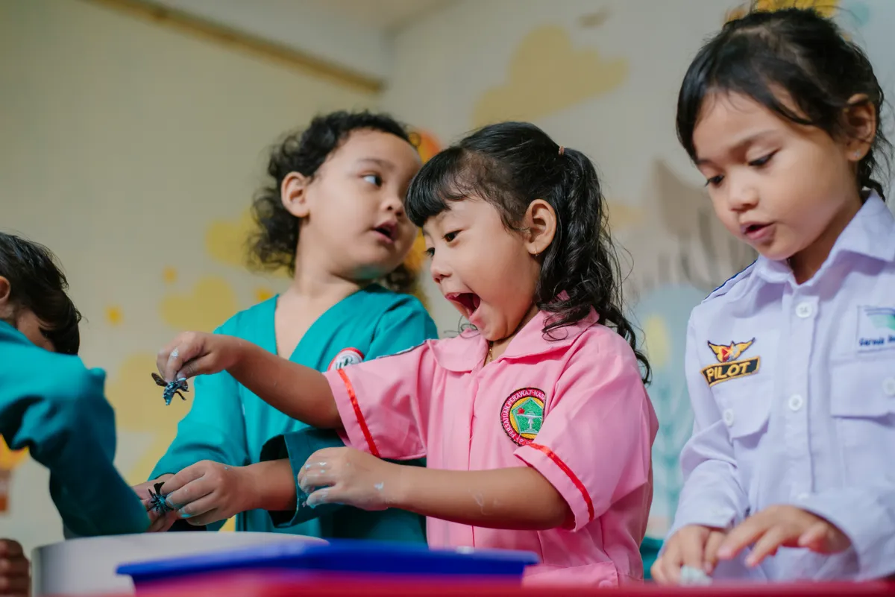

Tiga program ekstrakurikuler unggulan An-Nahl untuk mengembangkan bakat dan potensi anak secara optimal
Program ekskul dirancang khusus untuk anak usia dini dengan metode yang menyenangkan

Program memanah untuk anak usia dini yang melatih konsentrasi, ketenangan, dan koordinasi mata-tangan. Memanah adalah sunnah Rasulullah SAW yang sangat dianjurkan.

Program bahasa Inggris yang dirancang khusus untuk anak usia dini dengan metode bermain, bernyanyi, dan bercerita yang menyenangkan dan efektif.

Program seni mewarnai yang mengembangkan kreativitas, imajinasi, dan kemampuan motorik halus anak melalui berbagai teknik dan media seni yang menyenangkan.
Program ekskul kami dirancang dengan mempertimbangkan tumbuh kembang optimal anak usia dini berbasis nilai Islami
Dibimbing oleh instruktur berpengalaman di bidangnya masing-masing
Setiap kegiatan diintegrasikan dengan nilai-nilai Islam dan akhlak mulia
Metode bermain sambil belajar yang membuat anak antusias dan bahagia
Pendaftaran ekskul dilakukan bersamaan dengan pendaftaran sekolah
📝 Daftar Sekarang 💬 Tanya via WA